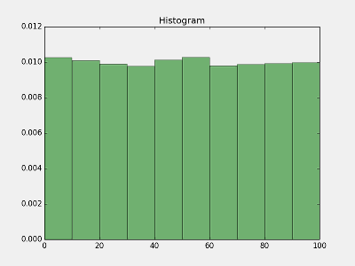
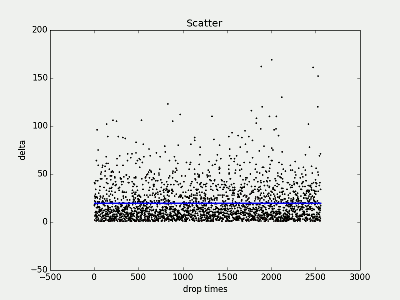
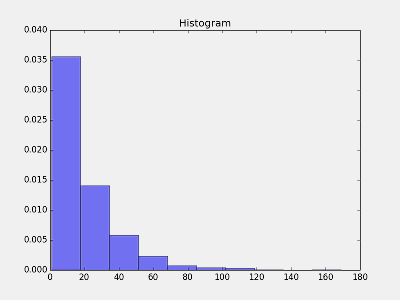
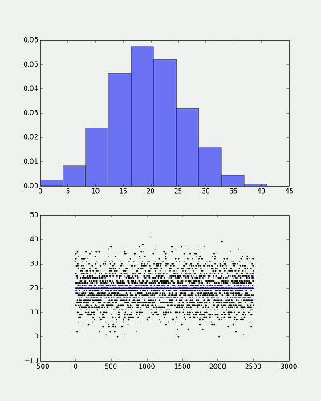
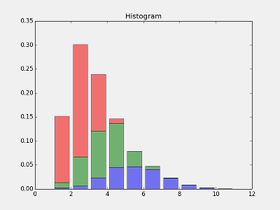

让物品掉落符合正态分布，以及lua实现
本文主要关注2个方面：随机数的分布，使用python来验证你的数据。
并不涉及基础知识点，因此段落之间会比较跳跃。
如果理解上困难，可以阅读最下方的参考文章。
本文所有的python代码都在Mac Os上编写并测试通过。
golden_slime@hotmail.com
随机数
我们先来生成 50000个 0-100 随机数，
我们使用 numpy的random库
import numpy as np
import matplotlib.pyplot as plt
np.random.seed(0)
x1 = np.random.rand(50000)*100
plt.hist(x1, normed=1, facecolor='green', alpha=0.5)
plt.title('Histogram')
plt.show()

分布地很均匀，似乎一切都很美好。
平均分布
一只策划狗过来对你说：“我希望5%的概率掉落卡牌A，巴拉巴拉巴拉”。
你不假思索，信手写下如下伪代码：
if math.random()<0.05 then
drop(card_A)
end
看上去似乎很完美
吗？
我们来观察一下用这种方式产生的 卡牌A两次掉落的间隔次数的情况：
先把间隔次数计算出来：
#创建 interval 数据
interval = []
cnt = 0
for i in x1:
cnt +=1
if i <= 5 :
interval.append( cnt )
cnt = 0
观察interval数据的散列图：
x = np.linspace( 1,len(interval),num=len(interval) )
#轴命名
plt.xlabel('drop times')
plt.ylabel('interval')
#画散列图
plt.scatter(x,interval , s=2 , c="#FF0000" )
# 画水平线
plt.plot( [ x[0] ,x[-1] ] , [ 20 , 20 ] , 'b' , linewidth=2 )
# title
plt.title('Scatter' )
plt.show()

上图绘制的是卡牌A的掉落的间隔统计，X轴是第几次掉落，Y 轴是 两次掉落的间隔。
因为卡牌A 的掉率概率是 5%， 所以理想情况，我们希望每20次左右，掉落一件。 图中蓝色的线， 就是 20次间隔线。
很不幸，分布并不是我们所期望的在蓝线附近， 可以看到出现连续掉落的频率非常高（间隔1），而最坏的情况，要间隔160次才会有下一次掉落，这就是大R们吐槽抽卡纯看脸的原因了。
下图很清晰的反映了这一点
plt.hist( interval , normed=1, facecolor='blue', alpha=0.5)
plt.title('Histogram')
plt.show()

interval 的概率密度图，X轴是间隔数，Y 轴 是各间隔的次数 出现的频率
这样的分布很糟糕，我们期望的分布是 20 出现的频率最大， 20附近频率逐渐减小。
正态分布 正好符合我们的分布要求。
正态分布
为了方便，我们直接生成5%掉落率的卡牌A的掉落的间隔，检验下正态分布的效果。
我们使用 位置参数 mu＝20 , 尺度参数 sigma = mu /3.0, 看下分布情况。
import numpy as np
import matplotlib.pyplot as plt
np.random.seed(0)
NN = int(50000 * 0.05)
mu, sigma = 20, 20/3.0
interval = [int(np.random.normal(mu, sigma)) for i in xrange(NN)]
plt.figure(figsize=(8,10) )
#plt.title('Histogram')
p1 = plt.subplot(211)
p2 = plt.subplot(212)
p1.hist( interval , normed=1, facecolor='blue', alpha=0.5)
x = np.linspace( 1,len(interval),num=len(interval) )
p2.xlabel('drop times')
p2.ylabel('interval')
p2.scatter(x,interval , s=2 , c="#FF0000" )
p2.plot( [ x[0] ,x[-1] ] , [ 20 , 20 ] , 'b' , linewidth=2 )
plt.show()

效果非常好，就是我们想要的。
根据权重计算掉落
现在有3种卡牌，掉落的权重分别 20, 30, 50 我们来计算出一个合理的掉落。
import numpy as np
import matplotlib.pyplot as plt
np.random.seed(0)
N= 50000
wt = [20, 30, 50 ]
wtp = [1.*x/sum(wt) for x in wt]
result = []
p = [np.random.normal( 1./x, 1./x/3.) for x in wtp]
for i in xrange(N):
minp = 1.e9
minj = -1
for j, pp in enumerate(p):
if pp < minp:
minp = pp
minj = j
result.append(minj)
for j, pp in enumerate(p):
p[j] -= minp
p[minj] = np.random.normal(1./wtp[minj], 1./wtp[minj]/3.)
- 先对所有物品按权值进行正太分布随机，每次取出 掉落间隔最小的物品, 也就是最先出现的( result <- item index ) ，然后其他物品均减去该间隔值
- 被取出的物品 再单独进行一次正太分布随机，获得新的掉落间隔
- goto step 1
理解这段代码的关键，是想清楚怎么利用我们之前生成的正态分布的间隔数据， 来还原掉落事件。
最后，我们测试一下生成的掉落数据是否满足我们的需求。
#计算各个掉落的间隔interval
import numpy as np
import matplotlib.pyplot as plt
intervals = []
for j in xrange( len( set( result ) ) ):
interval = []
intervals.append( interval )
cnt = 0
for i in result:
cnt +=1
if i==j :
interval.append( cnt )
cnt = 0
plt.title('Histogram')
colors = [ "b" , 'g',"r" , "c" , "m" , "y" , "k" , "#FF00FF" , "#800080" ]
#plt.ylim(0, 0.5)
plt.hist( intervals ,histtype='barstacked' , normed=1, alpha=0.5 ) #facecolor= colors[j]
plt.show()

perfect！
移植到lua
lua 标准库没有正态分布的实现(np.random.normal)，我们可以很容易就实现一个：
local NV_MAGICCONST = 1.71552776992
local function normalvariate(func_random, mu, sigma)
--[[Normal distribution.
mu is the mean, and sigma is the standard deviation.
--]]
-- mu = mean, sigma = standard deviation
-- Uses Kinderman and Monahan method. Reference: Kinderman,
-- A.J. and Monahan, J.F., "Computer generation of random
-- variables using the ratio of uniform deviates", ACM Trans
-- Math Software, 3, (1977), pp257-260.
local z
while true do
local u1 = func_random()
local u2 = 1.0 - func_random()
z = NV_MAGICCONST*(u1-0.5)/u2
local zz = z*z/4.0
if zz <= -math.log(u2) then
break
end
end
return mu + z*sigma
end
About python restore random seed ...
- use state
import random
old_state = random.getstate()
print random.random()
random.setstate(old_state)
print random.random()
# You can also restore the state into your own instance of the PRNG, to avoid
# thread-safety issues from using the default, global instance.
prng = random.Random()
prng.setstate(old_state)
print prng.random()
# The results of getstate can, of course, be pickled if you want to save it persistently.